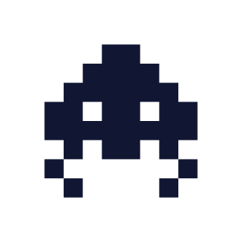
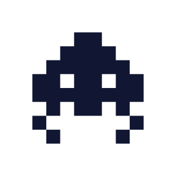
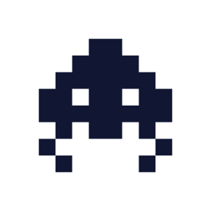
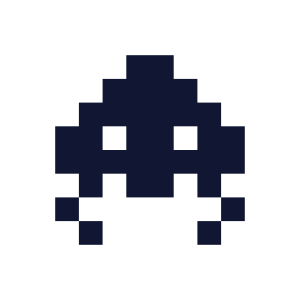

 

All of the work listed below were created during my time spent at DigiPen Institute of Technology. All credit belongs to DigiPen, details outlined below.
Omega Gladius was an interesting beast, and my first team project. I
had opted not to be the design lead for this project despite my team
nominating me for it because I wanted to take a backseat and build
someone else's game for a change. Our team leader decided they had
wanted to build an autorunner-type game, although for the purpose of
the class we needed to have additional gameplay elements as well. This
led to an amalgamation of an action hack and slash, as well as a
linear autorunner.
My role in the project's creation consisted of coding the character
controller, enemy behaviors, and various systems in the game. I also
created the character sprite and it's animations, as well as the enemy
sprite and accompanying combat effects. The project received a 4/5
(above expectations) as it's team grade score, and I received a score
of 5/5 on the game for individual contribution and academic
excellence.
For this project, I had switched to this team about halfway through
the course. Their previous team member had widthdrawn from the course
and I had offered to switch teams to help fill the gap. The design
lead's original game pitch was a fish-themed bullet hell where you
could slow down time and maneuver underwater to dodge incoming swarms
of bullets and enemies. This project was especially difficult as I had
gotten sick with COVID-19 during production, putting me out for a
third of the production process. Regardless, in the final 7 days of
the course, I was able to take my team member's rough pseudo-code and
translate it all into C# as well as prepared visual assets and
animations for the game ahead of the deadline.
My role in the project's creation consisted of coding the character
controller, enemy behaviors, and various systems in the game. I also
created and animated all visual assets in the game. The game received
a 4/5 (above expectations) and I received a personal grade of 5/5 on
the project for individual contribution and academic excellence.
This project is currently in-progress. Shattered Soul is an
atmospheric platformer with an emphasis on collectibles and level
exploration. We're hoping to have it on mobile platforms as well as on
a digital storefront by the end of GAM250.
A lot of my contributions to this project have been in the character
controller. Player movement is a huge part of what makes our game
enjoyable, and making sure a user has fun while controlling their
character is a huge part of my job. I also do most of the programming,
and handling the technical side of Unity.
All of the work listed below were created during my time spent at Platt College of San Diego. Any copyrighted material referenced or used for educational purposes belong to their respective companies.

For this project, I had switched to this team about halfway through
the course. Their previous team member had widthdrawn from the course
and I had offered to switch teams to help fill the gap. The design
lead's original game pitch was a fish-themed bullet hell where you
could slow down time and maneuver underwater to dodge incoming swarms
of bullets and enemies. This project was especially difficult as I had
gotten sick with COVID-19 during production, putting me out for a
third of the production process. Regardless, in the final 7 days of
the course, I was able to take my team member's rough pseudo-code and
translate it all into C# as well as prepared visual assets and
animations for the game ahead of the deadline.
My role in the project's creation consisted of coding the character
controller, enemy behaviors, and various systems in the game. I also
created and animated all visual assets in the game. The game received
a 4/5 (above expectations) and I received a personal grade of 5/5 on
the project for individual contribution and academic excellence.
This project is currently in-progress. Shattered Soul is an
atmospheric platformer with an emphasis on collectibles and level
exploration. We're hoping to have it on mobile platforms as well as on
a digital storefront by the end of GAM250.
A lot of my contributions to this project have been in the character
controller. Player movement is a huge part of what makes our game
enjoyable, and making sure a user has fun while controlling their
character is a huge part of my job. I also do most of the programming,
and handling the technical side of Unity.